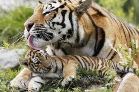

The Siberian Tiger is possibly the largest of the big cats, second only to the Liger, which is a hybrid species that only exists in captivity. The males typically range from 400 to 675 pounds. They are endangered, with only about 562 wild tigers in Russia, and reportedly 35 near the Russia/Chinese border.
